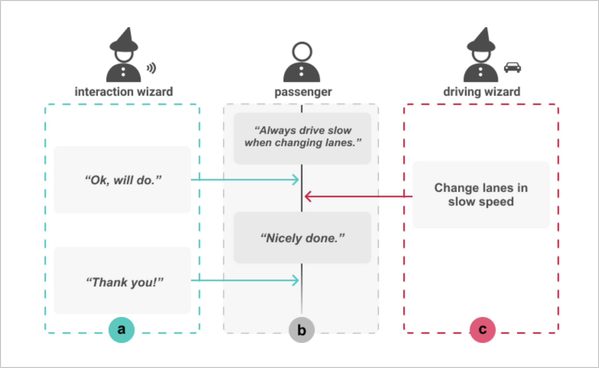
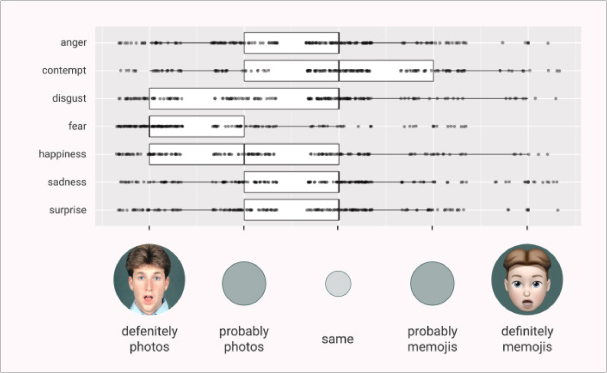
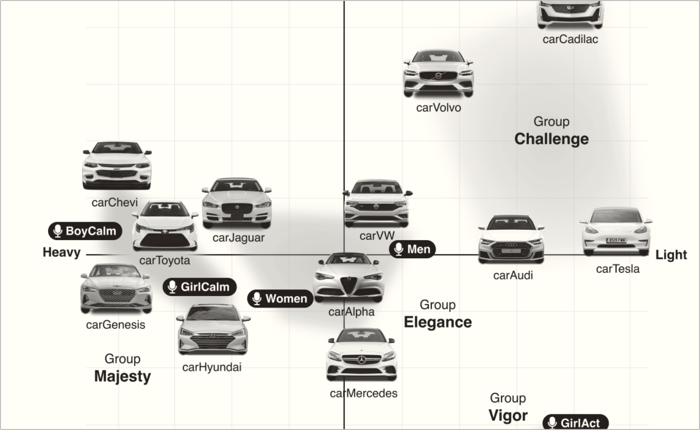
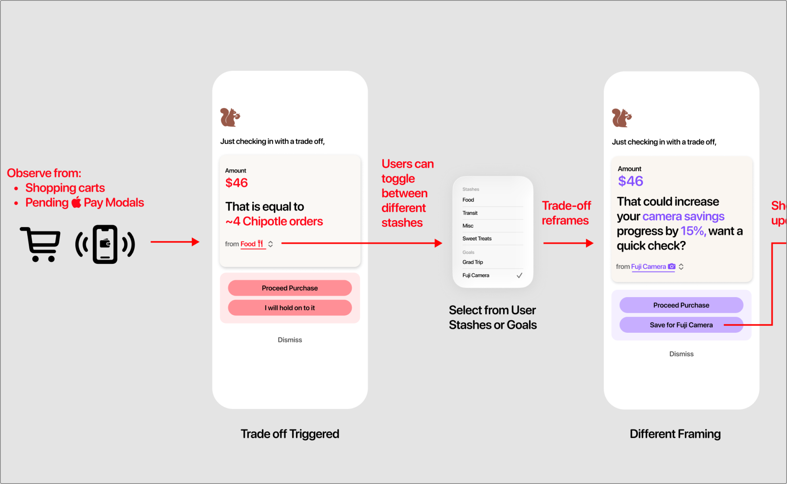
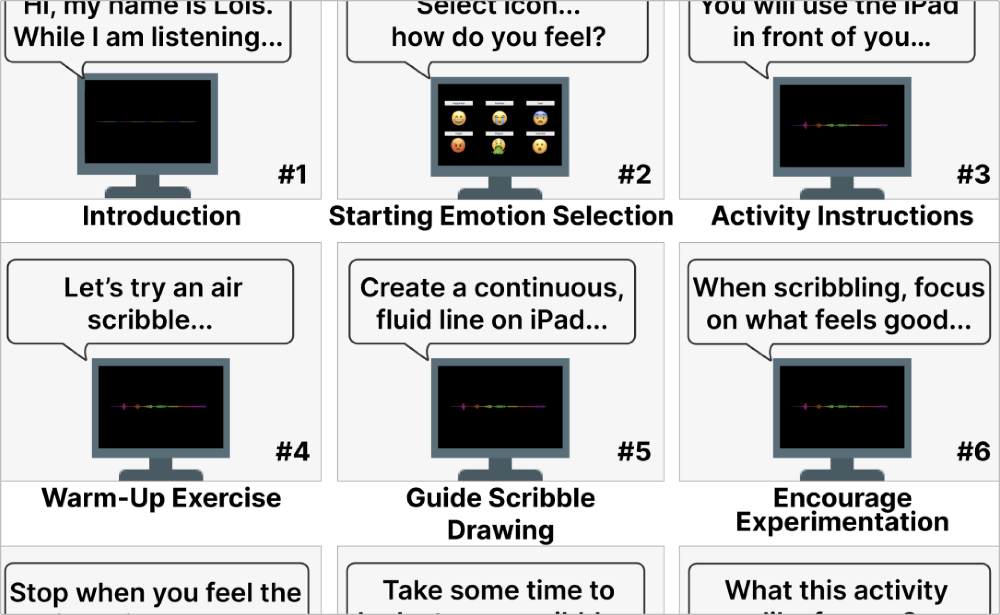
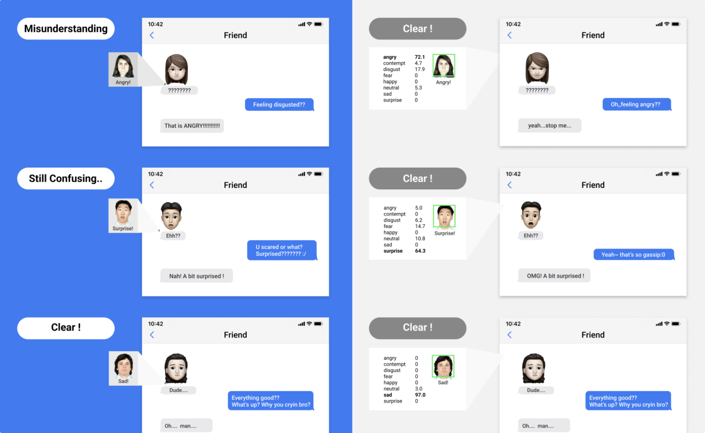
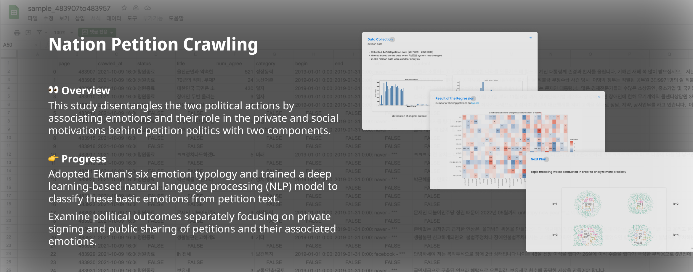
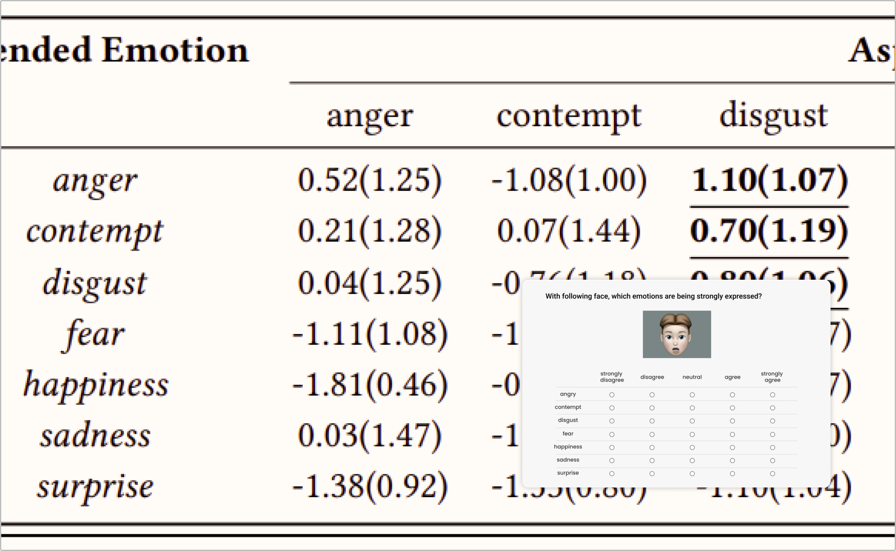

Journal & Conference Papers
Optimizing Artificial Intelligence Tools to Reduce Physician Burnout
Peter Lazes, Minjung Park, Jodi Forlizzi, and Hal F. Yee, Jr.
In submission
Co-Designing Care Coordination and Adherence in the ICU
Minjung Park, Shuhao Ma, Aashka P. Pallath, Tingyu Su, Ashveen Banga, Jeremy M. Kahn, Jodi Forlizzi, and John Zimmerman
In submission
When Are LLM Inferences Acceptable? User Reactions and Control Preferences for Inferred Personal Information
Kyzyl Monteiro, Minjung Park, Alexander Ioffrida, Angelina Sanna, Hao-Ping (Hank) Lee, Niloofar Mireshghallah, Yang Wang, and Sauvik Das
arXiv preprint
Investigating the Role of AI in Emergency Management: Use Cases, Challenges, and Opportunities
Samsara Foubert, Minjung Park, Kanad Pardeshi, Robert McDaniel, David Merrick, Tom, Robin Murphy, Aarti Singh, and Hoda Heidari
ACM Conference on Fairness, Accountability, and Transparency (FAccT ’26)

Designing Worker-Led Documentation Practices: How Unionized Cleaners Articulate Harm Beyond Reporting
Franky Spektor, Shivani Kapania, Minjung Park, Olivia Terry, Jodi Forlizzi, and Sarah Fox
ACM SIGCHI Conference on Designing Interactive Systems (DIS ’26)





Investigating the Relationship Between Vehicle Front Images and Voice Assistants
Minjung Park, Soyeong Min, Taesoo Kim, Hyeon-Jeong Suk
Korean Society for Emotion and Sensibility
Poster & Workshop Papers

Nutworth: Designing a Context-Aware Spending Companion for Value-Aligned Financial Decisions
Yee Kit Chan†, Evelynn Chen†, Joanna Ni†, Grace Malinger†, Minjung Park*, and Geoff Kaufman*
ACM SIGCHI Conference on Designing Interactive Systems (DIS ’26)
† and * indicate equal contribution.



Emotions that Make Online Petitions Successful: A Contrasting View of Private Signing and Public Sharing
Jaehong Kim, Chaeyoon Jeong, Mooyeol Oh, Minjung Park, Meeyoung Cha, Wonjae Lee
IC2S2(International Conference on Computational Social Science) 2022
